FMCW mmWave Radar
Hey! I want to take you on a tour that explains FMCW (Frequency Modulated Continuous Wave) mmWave radars. It is supposed to be fun.
We will first go back to high school physics and touch up our memory on electromagnetic waves.
We will then talk about how we can use a circle to represent radar signals and go over some very fundamental stuffs for the radar to help build familiarity around this topic.
The ultimate goal is to briefly answer “what is FMCW mmWave radar” in this 20-minute read.
Bear with me, annnnnnnd, let’s go!
Section 1: Electromagnetic Waves
We will begin the blog with the light bulb, something we’re all familiar with.
When we flip a switch to turn on the light, what we are doing essentially is just closing the electric circuit for the light bulb.
The power source creates a voltage that generates an electric field and drives electrons towards the bulb’s filament.
This causes the filament’s atoms to vibrate and release electromagnetic waves that light up the space.
The electromagnetic waves created this way have relatively high energy and short wave lengths
The radar works very similarly.
In the radar, we also use a voltage to move electrons (which happens in the conductor).
Instead of letting the electrons vibrate freely like the light bulb’s filament (which generates random electromagnetic waves that are good enough for brightening the room but not good enough for analysis), we oscillate them up and down in an ordered manner to produce controlled waves.
The electromagnetic waves produced this way have much longer
The animation below shows how these electromagnetic waves can be generated. Note how some of them appear darker. That is because the electromagnetic waves produced this way have lower intensity along some directions due to the geometry of the oscillation. (ps. there are also some special radars that transmit the same intensity of electromagnetic waves in all direction - those are called isotropic radars.)
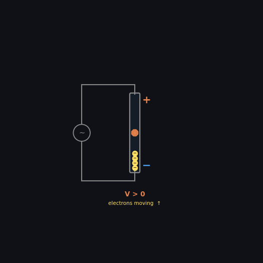
To get a closer look at some of these waves, let’s freeze the animation and zoom right in on some of them!
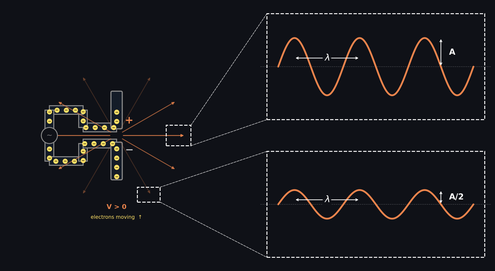
See the wavy nature of these rays now? Also note the amplitude difference across different directions.
At the end of the day, these mmWaves are essentially just the same matter as visible lights, only more spread out (longer
So whenever I think of mmWaves or electromagnetic waves, I just picture them in my head as visible lights. Somehow, this mental model has made me feel more comfortable working around mmWave radars.
So far so good? This will wrap up everything for section 1.
It’s not too bad. Right? I will leave you with a fun fact below, then let’s dive into section 2!
Fun fact: there are electromagnetic waves that have very very short
Section 2: The Basics of a Circle
In this chapter, our goal is to understand more about the circle -> because it is actually what we use to describe the event of voltage oscillation in the radar, the process which produces those mmWaves.
I will explain why the circle is used in section 3, for now, let’s just focus on the fundamentals together.
How about we start with my claim: there maybe no such thing as a circle.
What!? This is such non-sense. You might wonder. You have understood the circle for so long (perhaps from Kindergarten or middle school) and now there’s a guy telling you there is no such thing as a circle.
I totally get it. Let me explain.
Also, this blog should be written in a way that makes it totally up to you whether you decide if the circle exists.
(yes, it is going to be up to you anyway regardless of what I wrote… 😂 Just wanted to emphasize it here so it can serve as some kind of a reminder).
OK enough BS. Let’s get back to our blog.
Do you remember this guy? The one highlighted in the corner with a red circle, who looks just like you doing your little thing in the classroom and not paying attention to the instructor.
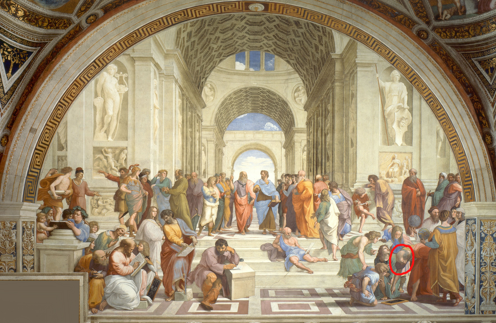
It is Euclid.
Using propositions 1, 9, 10 from the book he wrote around 2000 years ago, we can draw two circles to make one equilateral triangle, then split it in half to get two right-angled triangles (with proofs!).
Here are the two right-angled triangles I draw using his method:
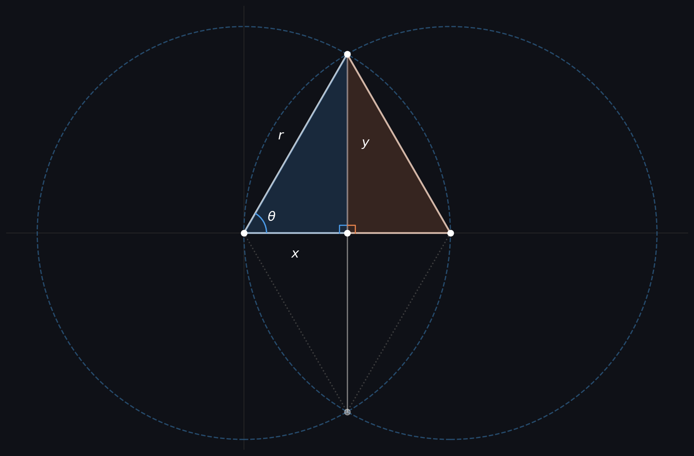
Let’s look at the one on the left. The blue shaded one. What is the definition of the ratio between the slope (r) and the verticle side (y)?
Ah, yes, you are right. We have learned this in middle school. It is defined by the sine function
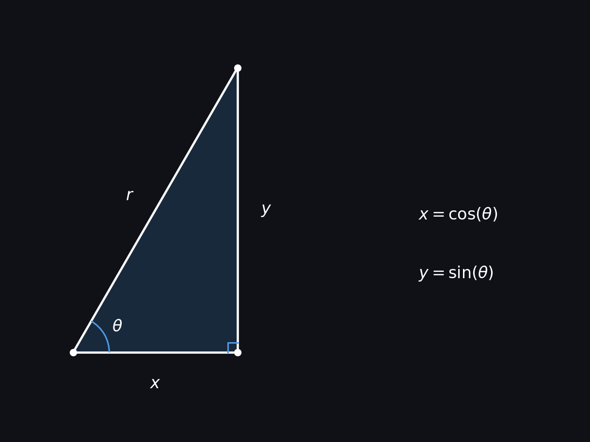
If r is 1, say the circles we draw were unit circles, then y is just equal to sin(
Now, let’s vary the angle
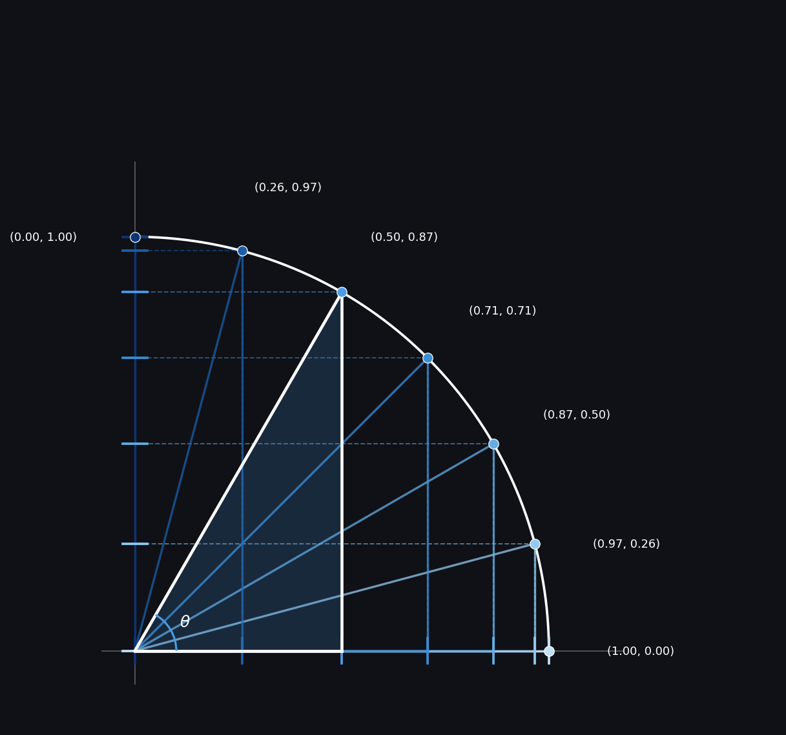
Indeed, we will get a group of points. Each point will have a x-coordinate, and a y-coordinate. And so we can plot them onto the xy plane.
As you might have observed, these points all land on the path of the circle’s arc.
And it is not hard to see that if
(this is also why Euclid can get to the right-angled triangles from two circles in the first place, the math is just defined so coherently)
The fact that when
But to describe the event of voltage oscilation, there is one thing missing here. And that’s time. Our event varies with time.
Indeed,
OK, so now we plot the x and y points as a function of time. What will that look like on the xy plane?
See this visual below, with a slow frequency to allow us to follow the points more easily.
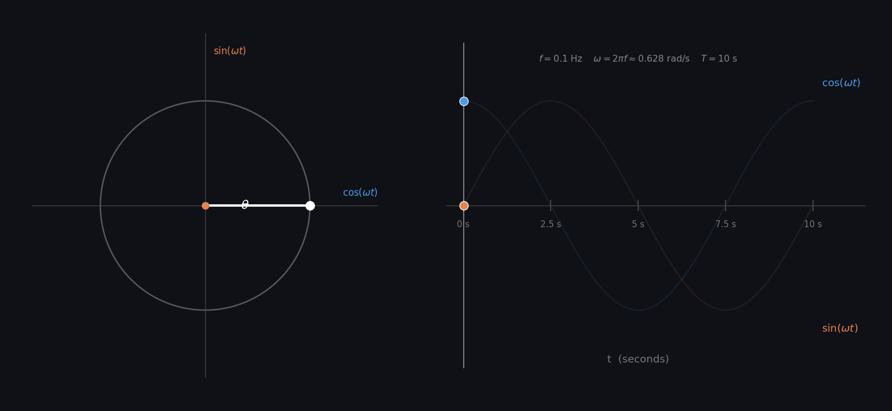
See how the x and y from the right-angled triangle traces out a nice circle on the left side in like 10 seconds? See how the
Now let’s do something crazier. What if we extend the circle to a 3-dimensional space? Let’s visualize this thing together with one more dimension, time.
Here’s the 3D representation in (time, x, y):
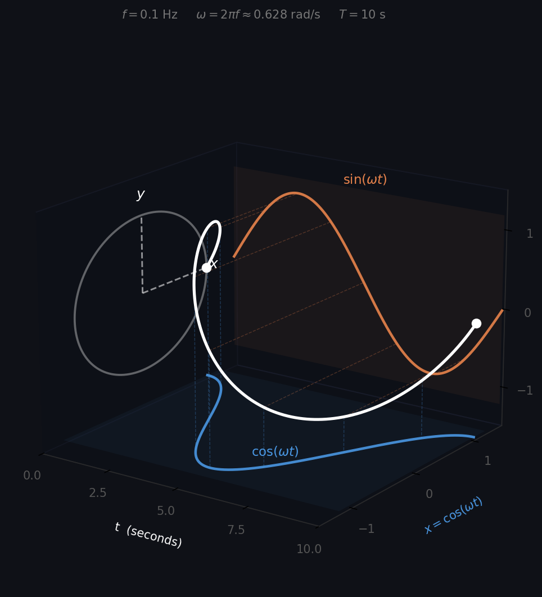
The circle became a spiral. Now when
Interestingly, when we project the spiral on the yt plane, we will get our sine function back. And if we do that to the xt plane, we will get our cosine function back.
So hopefully by this point you see what we have done here, is actually just representing the spiral using a coordinate of (
And indeed, this is written formally in math as
where Z is the spiral, and the j is there in front of the y component to indicate that the y component is on a different plane.
The components x(t) and y(t), are actually tracked separately in the radar and fused together later to reconstruct the signal.
This will wrap up our section 2. Feeling cool?
And oh yeah, we didn’t even find time to talk more about whether the circle exists. Maybe you can think about that on your own as well.
Do you believe that there is such thing as a circle, or is it just a bunch of points that follow the sine and cosine function and repeat in locations?
Section 3: Why Use a Circle to Represent Oscillating Voltage
Welcome to section 3. In this section, we will go over why the circle (or the spiral, if extended along time axis) is used to describe our event - voltage oscillation.
One property of the circle, which we kinda mentioned above, is that it repeats itself every 360°, so you can see already that there is some kind of a sign there for periodicity. This however is not the only way to represent periodic events.
Let’s have a look at Figure 2 again from above which shows how electromagnetic waves can be generated in the radar by oscillating the voltage up and down.
For simplicity, let’s assume the voltage in the animation oscillates from +10V to -10V, and completes every cycle in about 10 seconds.
We can then represent the event clearly using a straight vertical line that looks like this (see,not only the circle will get the job done):
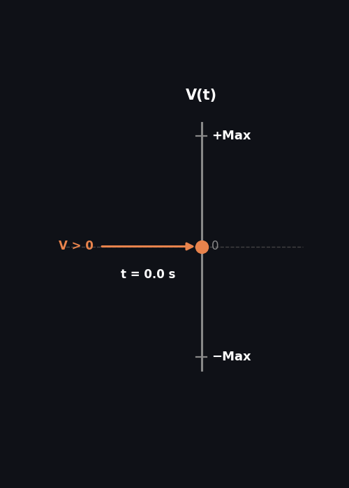
Notice how the +10V and -10V can be normalized into a range that goes from +Max to -Max? We can even describe these boundaries with +1 and -1.
In fact, if we do that, it will become quite obvious that the verticle line is just the y-component in the unit circle, which is governed by this relationship: Y(t) =
With this formula, we can make some observations.
Since the voltage V can be measured at any given time t, both V and t are considered known. And
Great.
That means this equation alone already perfectly describes the event of an oscillating voltage. (it surely does)
But what if the signal has a phase shift that makes it look something like this?
Voltage(t) =
In fact, this equation shows exactly what we will get, when the transmitted electromagnetic waves are later on received back at the radar.
But now there is a problem.
Given V,
Indeed, if you attempt to solve for
This can also be visualized graphically as follows:
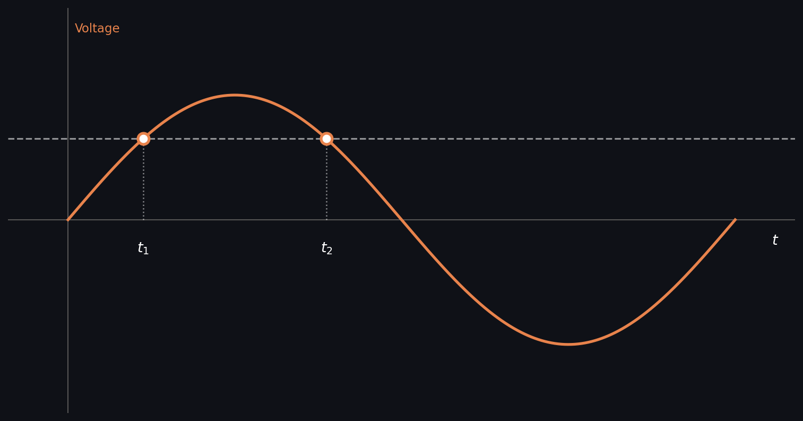
That’s why we need the second coordinate x(t) which gives:
x(t) =
Now if we solve both Voltage(t) and x(t) together for
And in this case, since we will need both Voltage(t) and x(t), technically, we’ll need a circle. And this is why the circle is used to represent the event.
Now let’s see that same circle again from Figure 8 but this time we will actually use it to represent our event.
Do you now feel more comfortable reading this animation?
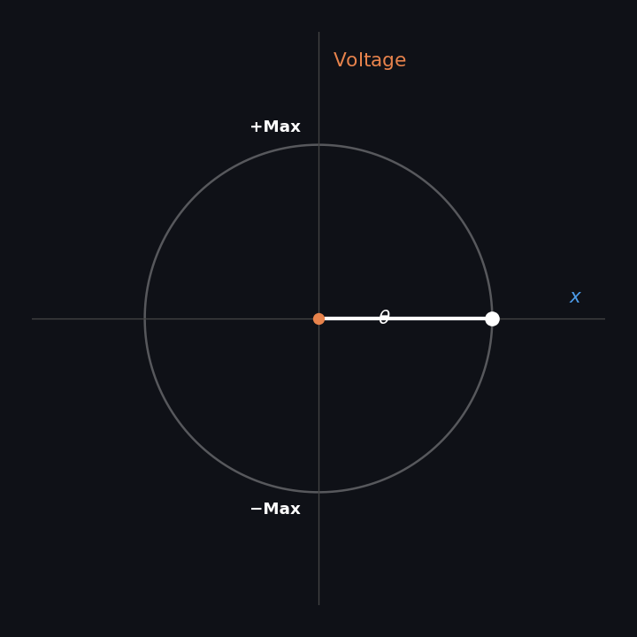
I also want to guide your attention to the labels of the y and x-axis above. Notice how only the y-axis has meanings (voltage) and the x-axis is actually meaningless?
This is completely normal. In fact, in the radar, x(t) is actually manipulated from the sine function by shifting it into a cosine one. Its primary role is to rule out the ambiguity from using just the sine function alone.
OK! This is it for section 3. How does it feel?
Hopefully by now you understand why the circle is used to represent an oscillating voltage. (but does it even exist in the first place? - oh boy.)
Section 4: Connecting the Circle with Electromagnetic Waves
Welcome to chapter 4. So far we have understood that mmWaves are electromagnetic waves generated by an oscillating voltage which can be described using a circle.
We will now discuss more about the electromagnetic waves and their relation with the oscillating voltage. Our goal for this section is to understand the system in greater details.
Let’s have another look at our friend, Figure 2:
In section 1, we briefly talked about how these electromagnetic waves have different intensities along multiple directions.
This property is governed by the geometry of the oscillating voltage. Say if the oscillation takes place along the z-axis, then the electromagnetic waves released towards the x and y-axis would have maximum amplitude, and along the z-axis their amplitude will be zero.
Everything else in between “parallel to oscillation” and “perpendicular to oscillation” will have some amplitude, not maxed nor nothing.
The visual below might help you see this in 3D:
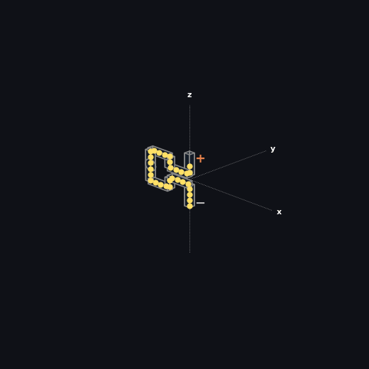
There are 2 ways to understand this animation.
First, since the intensity is max in directions perpendicular to oscillation, and is zero in the direction of oscillation, if we plot the points out with the coordinates (I,
Second, because electromagnetic waves can be absorbed and reflected by small particles in air when they travel through space, their amplitude decreases as function of distance travelled. So with that, you can also picture this animation as a way of showing the directions in which the electromagnetic waves can travel longer distances before their amplitude falls off.
Moving on, since we are pretty familiar with the circle by now, we might as well just use one to replace the oscillation above. This will get us something that looks like this:
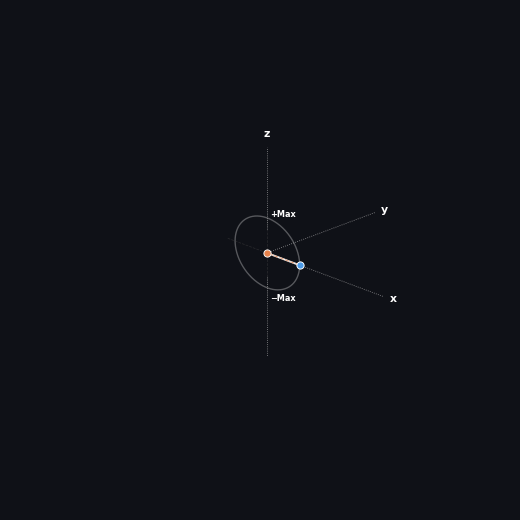
And… let us zoom in on some of these waves generated by the circle (region highlighted above), like we did for Figure 3. The waves along this direction shall have max intensity because they are perpendicular to oscillation.
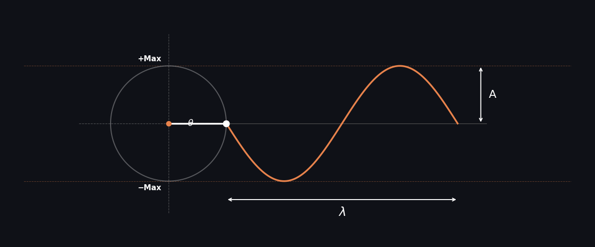
Note what is shown here (on the right) is the actual electromagnetic wave within one unit of wavelength. It is not the sine function that we’ve been talking about in section 3, which is y-axis of the circle.
Now, what is going to happen if we speed up the voltage oscillation, like for 2x the speed?
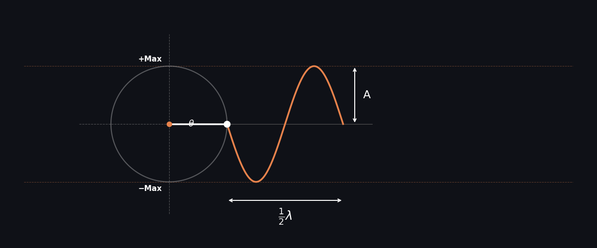
Mmmm… It seems like the wavelength of the electromagnetic waves is cut in half. Interesting eh?
How about we supply less voltage during oscillation?
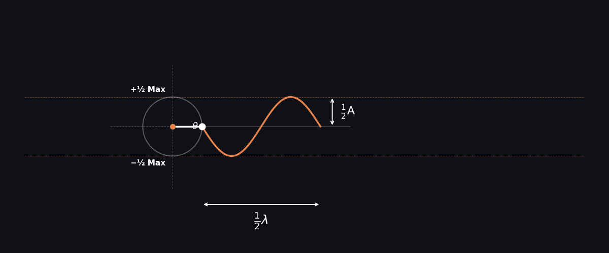
Oh… the circle has become smaller, and the amplitude of the wave is decreased.
The lower voltage has caused the strongest wave (along the perpendicular direction) to have an equivalent amplitude to those along the weaker directions.
With the poor starting momentum, this wave will not likely make it too far before its amplitude vanishes. In fact, they will offer no use to us well before they get to absolute zero amplitude.
This is because there exists a lot of signal noises in the environment. So whenever the waves’ amplitude is lower than that of the noise, we will lose the ability to distinguish between them from the noise.
Hence, it is quite critical that we supply a strong electromagnetic wave to begin with.
Section 5: Beam Forming
And… Amplitude enhancement can be done via beam forming.
Let us kick off this section with a 2D version of Figure 14 - under the context of beam forming, it will be easier if we visualize the radiation pattern this way.
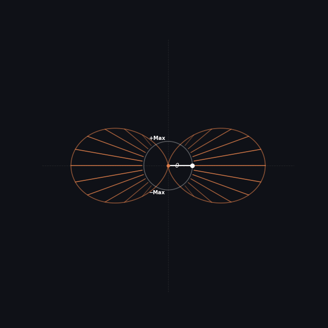
Here we are looking into the donut from Figure 14 from the front direction (where the y-axis was) and are projecting the pattern on to the xz-plane.
To make the electromagnetic waves stronger, one convenient way is to utilize a reflective material to re-direct those in one direction towards the other. This way although in one direction we get no signals at all, the other direction gets more of it.
This can be illustrated as follows:
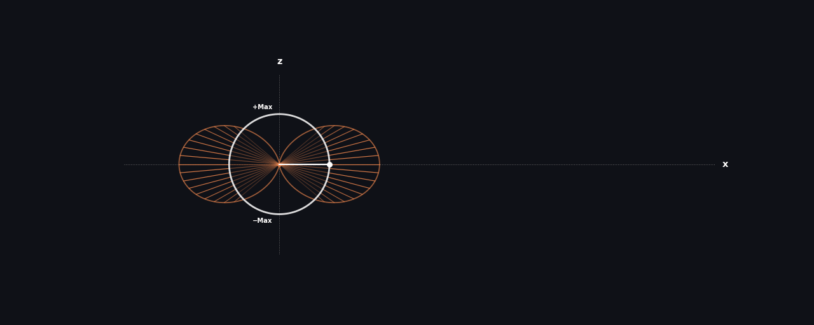
Another way to increase the signal power further is to add more sources that emit electromagnetic waves, such as, another circle.